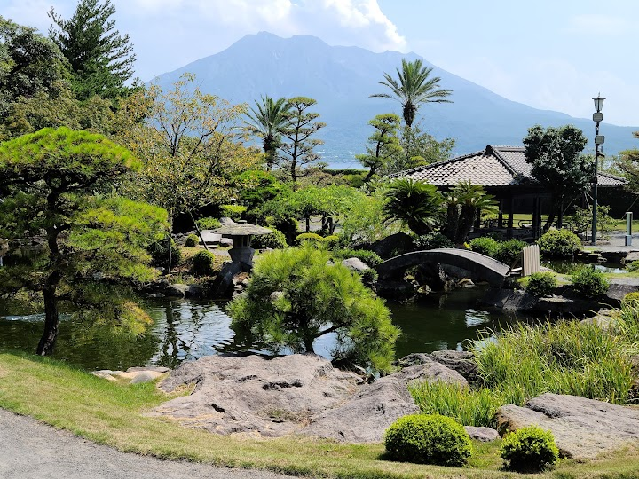
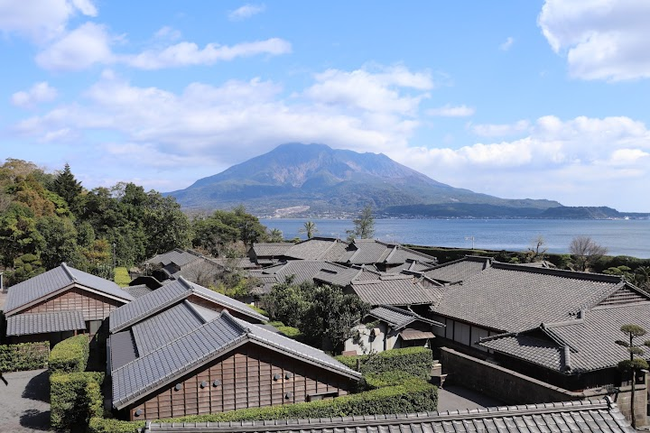
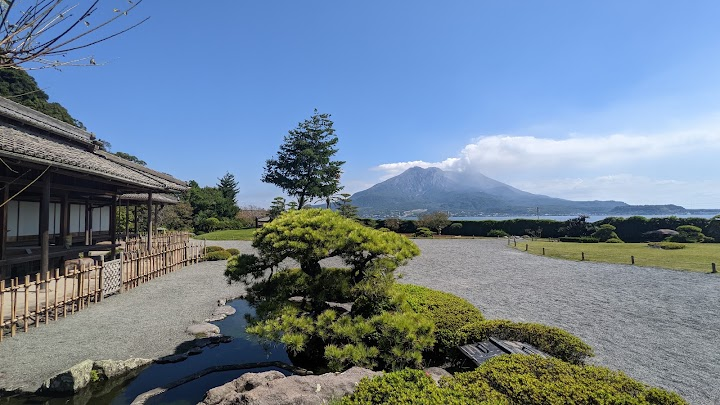
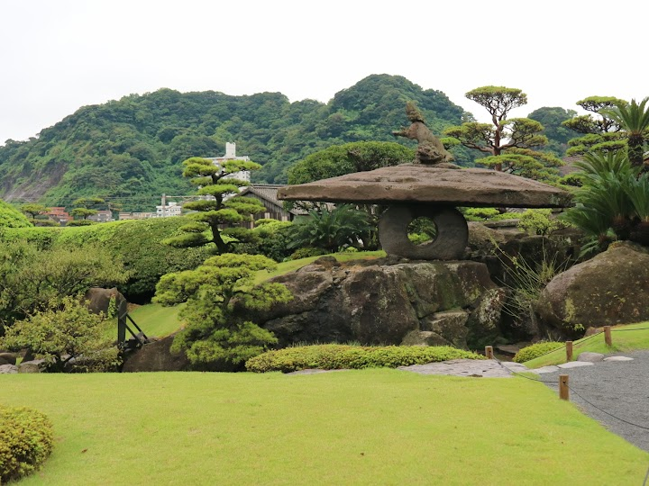
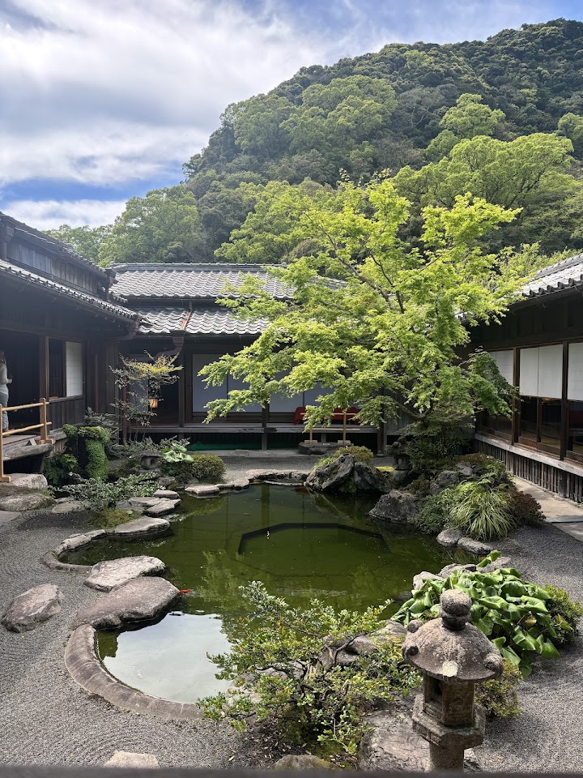

Sengan-en
Traditional Japanese garden & former residence of a feudal lord, with guided tours & volcano views.
Open in Google Maps (street view, more photos and reviews there)






Visitor tips on finding it and getting there
What a beautiful, authentic Japanese Garden. It was naturally awesome. We watched a video (its historical significance) at the entryway and proceeded to the garden compound. The garden faced Sakurajima very close, separated by streets & seas. Views were amazing. There was a row of shops selling souvenirs, ice cream & edibles. We were attracted by the pots of plants placed outside the shops. There was also a restaurant/cafe on higher ground. We enjoyed the stroll in a quiet setting. School students had their outing here, there were some performances. Sunlight shined through the clouds but the